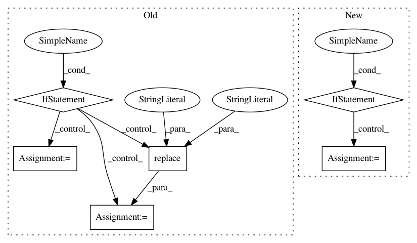

d48365776d72cfc7786e52210604698a7e6ceee8,qanta/wikipedia/cached_wikipedia.py,CachedWikipedia,__getitem__,#CachedWikipedia#Any#,206
Before Change
// so, follow redirect instead of original key
key = self.redirect(key)
if "/" in key:
filename = os.path.join(self.path, key.replace("/", "---"))
else:
filename = os.path.join(self.path, key)
page = None
if key in self.cache:
return self.cache[key]
After Change
// so, follow redirect instead of original key
title = self.redirect(key)
if title in self.cache:
page = self.cache[title]
else:
filepath = self.title_to_filepath(title)
if os.path.exists(filepath):
page = self._load_from_file_cache(filepath)
elif self.cached_wikipedia_remote_fallback:
page = self._load_remote_page(title, filepath)
else:
if self.write_dummy:
log.info(
"Writing dummy page for "{}"->"{}", remote callback disabled and write dummy enabled".format(
key, title))
page = create_wiki_page(title, "")
self.write_page(page)
else:
raise KeyError(""{}"->"{}" not found and both write dummy and remote callback are disabled".format(
key, title))
self.cache[title] = page
return page
def main():
In pattern: SUPERPATTERN
Frequency: 5
Non-data size: 6
Instances
Project Name: Pinafore/qb
Commit Name: d48365776d72cfc7786e52210604698a7e6ceee8
Time: 2017-05-21
Author: ski.rodriguez@gmail.com
File Name: qanta/wikipedia/cached_wikipedia.py
Class Name: CachedWikipedia
Method Name: __getitem__
Project Name: hellohaptik/chatbot_ner
Commit Name: e870ef14c590502fb0dc5ff3199e2602a87ec008
Time: 2019-03-18
Author: jain.chirag925@gmail.com
File Name: ner_v1/detectors/numeral/budget/budget_detection.py
Class Name: BudgetDetector
Method Name: _detect_max_budget
Project Name: biotite-dev/biotite
Commit Name: f7e6a5c544859ce6b0d6626e2f815b2db0c7813a
Time: 2019-11-13
Author: patrick.kunzm@gmail.com
File Name: src/biotite/sequence/io/genbank/annotation.py
Class Name:
Method Name: get_annotation
Project Name: konlpy/konlpy
Commit Name: cd28d70a9a960053d1d4f6d3e8fcf982ff12221b
Time: 2015-01-10
Author: me@lucypark.kr
File Name: setup.py
Class Name:
Method Name: requirements
Project Name: tgsmith61591/pmdarima
Commit Name: 5496637ebbd60082df146d540e66ccb9751e177e
Time: 2018-12-24
Author: drotarcharles@yahoo.com
File Name: pmdarima/arima/tests/test_arima_diagnostics.py
Class Name:
Method Name: